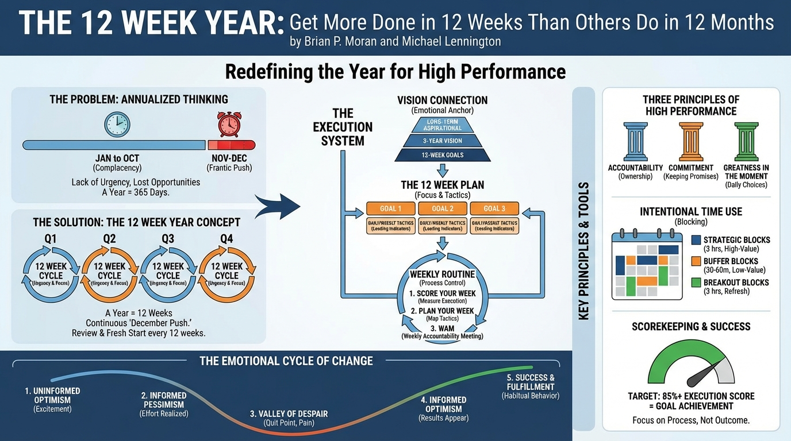

isbn-13: 9781394369157
Audible
AI Generated Content
Generated by gemini-3-pro-preview

Title: The 12 Week Year: Get More Done in 12 Weeks Than Others Do in 12 Months Author: Brian P. Moran and Michael Lennington ISBN: 9781394369157
Summary of Key Points**
The Problem of Annualized Thinking
The authors argue that the primary obstacle to high performance is "annualized thinking"—the mindset that there are 365 days in a year to achieve goals. This long timeline leads to complacency early in the year and a frantic push for results in November and December. By the time urgency kicks in, it is often too late to recover lost opportunities.
* *"We mistakenly believe that there is a lot of time left in the year, and we act accordingly. We lack a sense of urgency, not realizing that every week is important, every day is important, every moment is important."* (p. 16)The 12 Week Year Concept
The core methodology involves redefining a "year" as a 12-week period. In this system, there are no annual plans, only 12-week plans. This timeframe is long enough to get significant work done but short enough to maintain a constant sense of urgency. At the end of 12 weeks, there is a review period (the "year-end"), followed by a fresh start. This structure aims to replicate the "December push" continuously throughout the calendar year.Execution over Knowledge
Moran and Lennington posit that most individuals and organizations already possess the knowledge required to succeed; the gap exists in execution. Success is determined not by what one knows, but by the consistent application of that knowledge.
* *"Execution is the single greatest market differentiator."* (p. 11)The Three Principles of High Performance
1. **Accountability:** Defined not as consequences, but as ownership. It is the character trait of willingness to own one’s actions and results, regardless of circumstances.
2. **Commitment:** Keeping promises made to oneself. The book distinguishes commitment from merely "trying" or "hoping."
3. **Greatness in the Moment:** The understanding that results are the lagging indicator of past actions. Success is created in the moment of decision when one chooses to do the necessary (often difficult) work.Vision Connection
Effective planning begins with a vision that extends beyond business goals. The authors emphasize a three-tiered vision structure:
* **Long-term Aspirational Vision:** What one wants for their life eventually.
* **3-Year Vision:** A clearer picture of the medium-term future.
* **12-Week Goals:** Specific, measurable targets that align with the larger vision.
* *"A compelling vision creates a strong emotional connection to the work you are doing today."* (p. 45)Writing the 12 Week Plan
A 12-week plan should be limited to two or three primary goals to ensure focus. Each goal must have specific "tactics"—the daily and weekly actions required to achieve the goal. The plan focuses on *leading indicators* (actions taken) rather than *lagging indicators* (results achieved).Process Control: The Weekly Routine
To manage the 12-week cycle, the authors prescribe a weekly routine:
1. **Score Your Week:** Measure execution of the previous week’s tactics.
2. **Plan Your Week:** Map out the tactics for the upcoming week.
3. **Participate in a WAM (Weekly Accountability Meeting):** A short meeting (15–30 minutes) with peers to report on execution scores and commit to the next week’s actions.Scorekeeping
The system relies on a weekly execution score. If a user plans 10 tactics and completes 8, their score is 80%. The authors state that consistently achieving an execution score of 85% or higher generally guarantees the achievement of the 12-week goals. This shifts the focus from worrying about the outcome to focusing on the process.
> "If you successfully complete 85 percent of the tactics in your plan, you will most likely achieve your objectives."* (p. 96)The Emotional Cycle of Change
The book prepares readers for the psychological stages of adopting a new system:
1. **Uninformed Optimism:** Excitement at the start.
2. **Informed Pessimism:** The realization of the effort required.
3. **The Valley of Despair:** Where most people quit due to pain and lack of immediate results.
4. **Informed Optimism:** Results begin to appear.
5. **Success and Fulfillment:** The new behaviors become habitual.Intentional Time Use
To execute the plan, time must be blocked specifically. The authors categorize time into three distinct blocks:
* **Strategic Blocks:** Three hours of uninterrupted time scheduled weekly to work on the high-value activities (tactics) in the plan.
* **Buffer Blocks:** Time scheduled to deal with low-value, unplanned activities like email and phone calls (usually 30–60 minutes per day).
* **Breakout Blocks:** Three hours of free time scheduled during work hours to refresh the mind and prevent burnout.Further Reading
- The 4 Disciplines of Execution: Achieving Your Wildly Important Goals by Chris McChesney, Sean Covey, and Jim Huling
- Getting Things Done: The Art of Stress-Free Productivity by David Allen
- Atomic Habits: An Easy & Proven Way to Build Good Habits & Break Bad Ones by James Clear
- Essentialism: The Disciplined Pursuit of Less by Greg McKeown